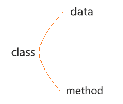
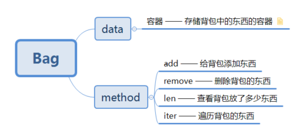

1. 抽象数据类型和面向对象编程¶
抽象数据类型¶
理解之前先看看什么是抽象数据类型，请看下图：
{kind=link}
首先实例化了一个 list 对象 l，然后通过 VsCode 的联想，我们能看到在 l 这个对象中有很多方法。 你还可以通过下面的方式将其打印出来：
>>> l = list() # 实例化对象l
>>> print(dir(l)) # 打印l中的方法
['__add__', '__class__', '__contains__', '__delattr__', '__delitem__', '__dir__', '__doc__', '__eq__', '__format__', '__ge__', '__getattribute__', '__getitem__', '__gt__', '__hash__', '__iadd__', \
'__imul__', '__init__', '__init_subclass__', '__iter__', '__le__', '__len__', '__lt__', '__mul__', '__ne__', '__new__', '__reduce__', '__reduce_ex__', '__repr__', '__reversed__', '__rmul__', '__setattr__', \
'__setitem__', '__sizeof__', '__str__', '__subclasshook__', 'append', 'clear', 'copy', 'count', 'extend', 'index', 'insert', 'pop', 'remove', 'reverse', 'sort']
为什么上面的 l 对象中会有这么多方法，那是因为将它实例化的 数据结构–list 里面就封装了这些方法。 这里的 list 对象就是一个抽象的数据类型( 简称 ADT )
实现规则¶
见识了数据类型的奇妙，那么如何使用python代码构建自己的抽象数据类型呢？
其实你别看上面这么多方法，它都是有迹可循的
{kind=link}
- 上图的结构是构建ADT必备的框架，其中：
- data 是指 class 里面必要的基础属性，例如 array 中的数组长度
- method 则是指 class 具备的一些方法，例如上述的 list 对象中就有 append、len、clear 等方法
- 一个 class 应该具备哪些 data 和 method 需要根据实际的问题实际考虑
Note
- TIPS：
- 上述所说的方法，你也可以称为函数，在 python 中方法和函数没有特别统一的区分，但如果是在某个对象中的函数，我们还是习惯于将它称为这个对象的方法。
实现举例¶
下面简单实现一个 bag (背包)的抽象数据类型吧，首先依据上面提到的实现规则看下图：
{kind=link}
上图就是 Bag 这个数据类型所包含的基本内容，接下来就是如何用代码来具体实现了
#coding-utf-8
class Bag():
def __init__(self, maxsize=10): # 指定背包的默认最大长度
self.maxsize = maxsize
self._items = list() # 实例化容器对象，这里使用list
def __len__(self): # 求背包现有物品长度
return len(self._items)
def add(self, item):
if len(self) >= self.maxsize: # add之前判断背包是否物品已满
raise Exception('Bag is full')
self._items.append(item)
def remove(self, item):
self._items.remove(item)
def __iter__(self):
for i in self._items: # yield惰性输出
yield i
def clear(self): # 清除
self._items.clear()
# 测试ADT
bag = Bag()
for i in range(5):
bag.add(i)
assert len(bag) == 5 # 断言判断
bag.remove(2)
assert len(bag) == 4
bag.clear()
assert len(bag) == 0
for i in range(10):
bag.add(i)
assert len(bag) == 10
try: # 异常捕获
bag.add(0)
except Exception as e:
print('Bag is full ! ')
print('用例执行完成')
上述代码虽然实现了一个 Bag 的类型，但是里面使用的代码效率上没有 python 自身的数据类型这么高。并且上述代码还有待完善的地方，比如
在 remove 方法中如果加上判断移除的元素是否存在会更好。
动手实践比空想实际的多，快自己动手写写吧！
小结¶
书写抽象数据类型需要注意的一些地方：
Warning
- 选用正确的DataStructure，选择标准为：该数据结构能够操作method中所列出的方法
- 能否支持高效的操作，即代码的执行效率如何 （考虑时间、空间复杂度）